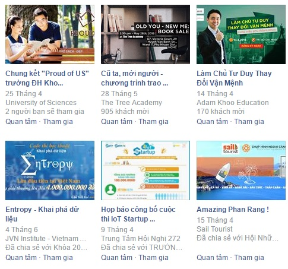
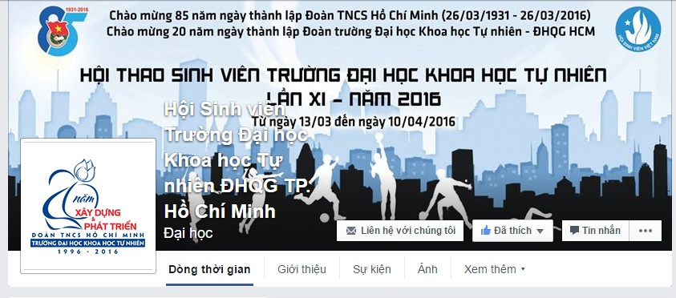

BƯỚC 2
Trong bước 2 này, người dùng sẽ bắt đầu tìm kiếm thông tin về hoạt động thông qua các phương tiện thông tin đại chúng. Thường dùng nhất trong số này là các kênh Facebook và bạn bè.
Mạng xã hội là các công cụ kết nối mạnh mẽ (Nguồn : Internet)
Tìm kiếm trên Facebook là một cách làm rất hiệu quả, bởi lẽ Facebook đang dần trở thành một thành phần không thể thiếu trong cuộc sống của nhiều người dân Việt Nam. Mạng xã hội tỏ ra rất hiệu quả trong việc phát tán lan truyền thông tin thông qua nhiều người.

Facebook là nơi nhiều người chia sẻ sự kiện (Nguồn : Internet)
Tìm kiếm sự kiện thông qua bạn bè gần xa luôn là một ý hay. Con người ta không thể tự mình làm quá nhiều công việc. Bạn bè luôn là cầu nối khiến chúng ta gần hơn với thế giới xung quanh.
Tham gia sự kiện cùng bạn bè là thú vui rất tốt (Nguồn : Internet)
Ngoài ra nếu bạn thường xuyên lui đến một vài địa chỉ thân thuộc, bạn có thể ghé thăm trực tiếp fanpage hay website của nơi đó để cập nhật trực tiếp và nhanh nhất.

Fanpge là nơi cung cấp thông tin nhanh nhất (Nguồn : Internet)
BƯỚC 2
Mạng xã hội là các công cụ kết nối mạnh mẽ (Nguồn : Internet)
Facebook là nơi nhiều người chia sẻ sự kiện (Nguồn : Internet)
Tham gia sự kiện cùng bạn bè là thú vui rất tốt (Nguồn : Internet)
Fanpge là nơi cung cấp thông tin nhanh nhất (Nguồn : Internet)